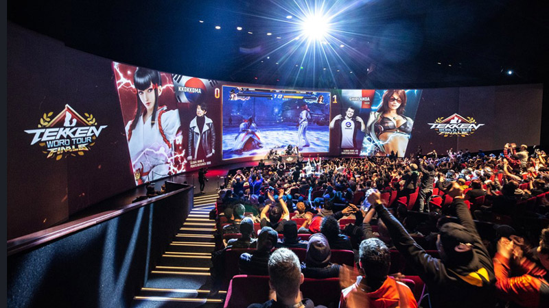
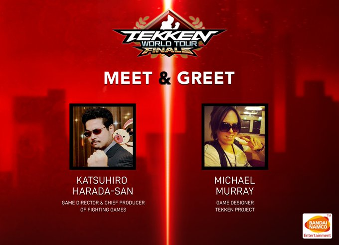
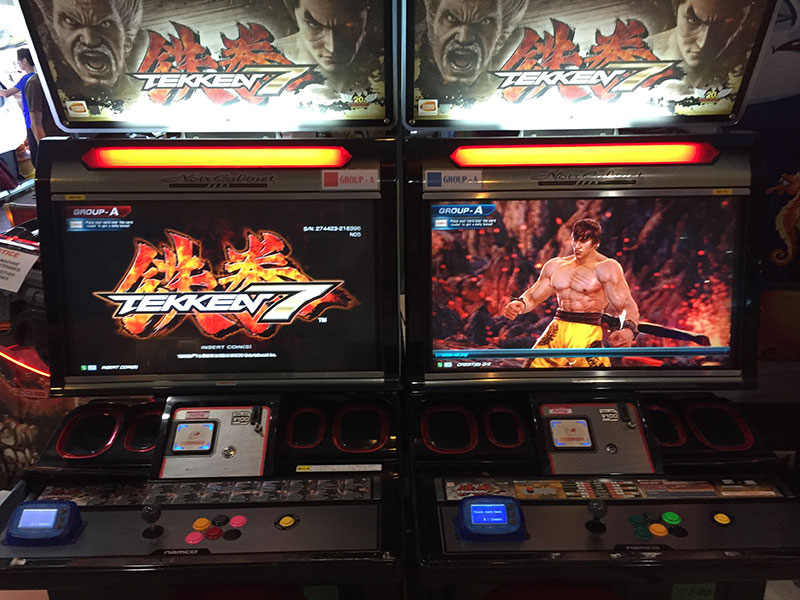

Tekken 7
- Winning the Last Chance Qualifier tournament at the Finals.
- Placing in the Top 19 players on the Global Ranking Leaderboard.

The combo system in Tekken 7 retains some of the aspects of Tekken Revolution, in which it is no longer possible to bound a character during a combo. However, the bound state still exists, but a lot of moves that use to bound are being taken out.In order to compensate for the lack of bounds, many moves were given new combo dynamics in order to extend combos.

Tekken fans have the opportunity to meet and greet, Franchise Director Katsuhiro Harada along with Game Designer Michael Murray this year at the Tekken Wolrd Tour in Kuala Lumpur. Organised by Namco Bandai Partners Malaysia, the meet-and-greet will be held at exactly right where any fighting game enthusiast would dream of, in the heart of the arcade itself.

A special one-day-only mini-stage set-up stands tall for all to see. It also came along with an Arcade Machine setup that had a demo of the console version of Tekken Tag 2 Tournament for fans to try out. Amongst a rows of Tekken Tag Tournament 2 arcade machines that fans can play throughout the day and have fun while enjoying the tournament.